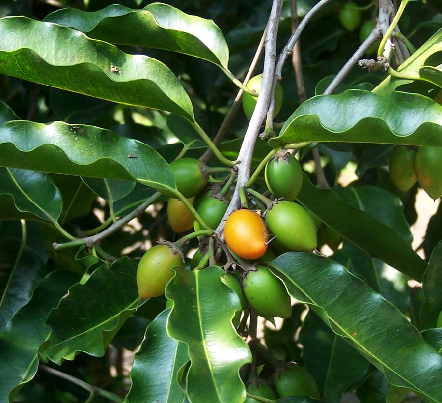

मौलसरीMaulsari
Mimusops elengi · Sapotaceae · FLR-0191

- Scientific name वैज्ञानिक नाम
- Mimusops elengi L.
- Family कुल
- Sapotaceae
- Hindi हिंदी
- मौलसरी
- Local names स्थानीय नाम
- maulsari, maulshree, molsari, bakul, spanish cherry
- Status here यहाँ की स्थिति
- native
- Movement आवागमन
- Resident, here all year
- IUCN IUCN
- LC
- Review समीक्षा
- audited and independently read
When to look कब देखें
Present all year. साल भर मौजूद।
Uses and possibilities उपयोग और संभावनाएँ
“Traditional medicine” means a documented traditional use, not a claim that it works. Nothing on this page is medical advice.
Drawn from the documented uses in the profile below, where each is labelled traditional, current or a research lead. All uses →
Tell it apart from इनसे अलग पहचानें
मौलसरी / Maulsari
Mimusops elengi L. — Sapotaceae
मौलसरी — पूरे पूर्वी उत्तर प्रदेश में देशज और सामान्य एक मध्यम आकार का सदाबहार पेड़ है जो शहरों, गाँवों और मंदिरों के बागों में लगाया जाता है। इसके फूल सुगंधित, सफेद-पीले, नन्हे, और बसंत में कई दिनों तक खिलते हैं, जिससे पूरा पेड़ सुगंध से भर जाता है। पक्षियों के लिए अमृत का स्रोत है। फल छोटे, अंडाकार, भूरे, मीठे होते हैं जिन्हें बच्चे खाते हैं। इसकी छाल और जड़ों का उपयोग आयुर्वेद में दंत और मसूड़ों की समस्याओं के लिए होता है।
Quick Identification त्वरित पहचान
| Feature | Description |
|---|---|
| Size | Evergreen or semi-deciduous tree, 10–20 m, pyramidal or rounded crown, dense foliage |
| Leaves | Alternate, oblong to lanceolate, 7–12 cm, dark glossy green, leathery |
| Flowers | Small, white or pale yellow, fragrant, clustered in leaf axils, February–April |
| Fruit | Oblong, 1.5–2.5 cm, dark brown when ripe, sweet flesh with 1–2 seeds |
| Bark | Dark grey, longitudinally fissured |
| The test | Fragrant small flowers in bunches along branches; small sweet brown fruit |
Field tip: Look for a large evergreen tree with dark glossy leaves and in February–April listen for the intense fragrance. The small white-yellow flowers are clustered in the leaf axils. Small brown sweet fruits appear in May–July.
हिंदी — कैसे पहचानें: बड़ा सदाबहार पेड़, चमकीली गहरी पत्तियाँ, बहुत सुगंधित सफेद-पीले नन्हे फूल, छोटे भूरे मीठे फल।
Morphology आकारिकी
Biometrics (native trees, eastern India):
| Measurement | Range |
|---|---|
| Height | 10–20 m |
| Trunk diameter | 30–100 cm |
| Leaf length | 7–12 cm |
| Flower diameter | 3–5 mm |
| Fruit length | 1.5–2.5 cm |
| Fruit weight | 3–5 g |
Trunk and bark: Straight or slightly crooked, bark dark grey, longitudinally fissured. Wood hard, pale, durable.
Leaves: Alternate, simple, oblong to lanceolate, 7–12 cm long, 2.5–4.5 cm wide, with a prominent midvein. Entire margin, dark glossy green above, paler below, leathery texture. Petiolate (short stalk 0.5–1 cm).
Flowers: Hermaphrodite, borne in clusters (fascicles) in the leaf axils, white or pale yellow, very fragrant, especially in evening and at night. Calyx with four sepals, corolla with four petals and eight staminodes (sterile stamens), four fertile stamens. Flowers open in succession over many days, so fragrance continues for weeks. Pollinated by bees and nocturnal insects.
Fruit: A berry, oblong, 1.5–2.5 cm long, smooth, dark brown or black when ripe. Contains 1–2 large hard seeds surrounded by sweet edible flesh (aril).
हिंदी: पत्तियाँ गहरी, चमकीली, चमड़े जैसी। फूल नन्हे, सफेद-पीले, बहुत सुगंधित। फल छोटा, गोल, भूरा, मीठा।
Behaviour & Ecology व्यवहार और पारिस्थितिकी
A native tree of the Indian subcontinent, found in natural deciduous and semi-evergreen forests as well as cultivated in gardens and sacred groves. In the Basti region it is well-adapted, being drought-tolerant and preferring well-drained soils. Growth is slow to moderate; trees live for many decades. The tree is shade-tolerant and often planted along roadsides and in orchards for the fragrance of its flowers and the sweetness of its fruit.
The fragrant flowers attract Asian Honey Bee and other bees intensively during February–April. Ripe fruits are eaten by Common Myna, Rose-ringed Parakeet, Indian Flying Fox, and squirrels. The tree is used for nesting by many bird species.
हिंदी: यह भारतीय जंगलों का अपना पेड़ है। धीमी गति से बढ़ता है पर लंबी उम्र वाला। सूखा सहन करता है। मधुमक्खियों और पक्षियों को भोजन देता है।
Life Cycle / Phenology जीवन चक्र
| Month / season | Event |
|---|---|
| December–January | Rest period; some leaf fall in drier areas |
| February–April | Intense flowering; fragrance peaks in evening |
| May–July | Fruit ripening (brown color indicates ripeness) |
| July–November | Vegetative growth after monsoon |
| Very slow | Maturity at 20–30 years; lifespan 100+ years |
Seeds germinate slowly; nursery seedlings develop slowly. Trees grown from seed are variable; propagation by budding maintains superior forms.
हिंदी: फरवरी-अप्रैल में फूल, सुगंध रात में ज़्यादा। मई-जुलाई में फल। बहुत सुस्त बढ़ने वाला पेड़, लंबी उम्र।
Associated Species / Interactions संबंधित प्रजातियाँ
- Pollinators: Asian Honey Bee, bees, and night-flying insects on flowers.
- Fruit dispersers: Common Myna, Rose-ringed Parakeet, Northern Palm Squirrel, Indian Flying Fox.
- Companions: Often planted with Neem, Jamun, and Mango in sacred and village groves.
Pests and Diseases कीट और रोग
- Relatively pest-free compared to most fruit trees.
- Occasional leaf-eating caterpillars; rarely serious.
- Scale insects on stems; controlled with oil spray if needed.
- Leaf spot fungi in wet years; improves with better drainage.
- Heart rot in waterlogged soils; drainage essential.
Agricultural / Human Relevance कृषि प्रासंगिकता
Traditional and ethnobotanical use:
The small sweet fruit is eaten fresh, especially by children. The flowers are valued for their intense fragrance and are sometimes used in religious and cultural ceremonies. The bark and root are used in traditional Ayurvedic medicine for dental problems and gum disease.
Today. Maulsari is valued in Basti and eastern UP primarily for its fragrance and as a shade tree. The fruit is a minor food source. Trees are common in temple groves and institutional gardens where the fragrance is appreciated.
Traditional medicine (documented uses; not medical advice): The bark, root, and leaves are listed in Ayurvedic texts for mouth ulcers, gum bleeding, and dental pain. Modern research has documented antimicrobial properties in the extracts.
Horticultural use: Because it is slow-growing but long-lived, hardy, and requires minimal input, it is ideal for roadside and institutional planting. The fragrance makes it valuable in cultural landscapes.
हिंदी: मौलसरी की खुशबू मशहूर है; पूरा मुहल्ला सुगंधित हो जाता है। फल मीठा, बच्चे खाते हैं। छाल और जड़ दंत रोगों में आयुर्वेदीय दवा।
Expected Locally स्थानीय रूप से अपेक्षित
Not a field record. Written from published accounts for eastern Uttar Pradesh. No confirmed local sighting yet — if you have seen it, that is what the atlas needs.
अभी तक स्थानीय पुष्टि नहीं। यह विवरण प्रकाशित स्रोतों से है, किसी अवलोकन से नहीं।
Expected as a native and cultivated tree throughout Basti district. Look for it in temple groves, village sacred groves, roadsides, and older homestead gardens. The fragrance in February–April is the best indicator. Any flowering tree is worth recording with location and date of first flowering.
Distribution वितरण
Global range: Native to the Indian subcontinent and tropical regions of Asia; introduced to Africa and the Pacific.
In India: Widespread in natural forests from the Himalayan foothills to the Deccan, especially in deciduous and semi-evergreen forests.
In Uttar Pradesh: Abundant in all forests; cultivated in all districts.
In Basti district / eastern UP: Common in forest remnants, roadsides, and village groves; locally abundant.
Research Questions शोध प्रश्न
Anyone can investigate these | कोई भी इन प्रश्नों की जाँच कर सकता है
- How long is the peak fragrance period of maulsari flowers, and at what time of day is it strongest? / मौलसरी के फूलों की सुगंध दिन में कब सबसे तेज़ होती है? — Record flowering dates and fragrance intensity throughout the day.
- Which birds and squirrels eat maulsari fruit, and in what order do they visit? — Observe a fruiting tree daily.
- Does the fragrance attract more bees in the morning or evening? — Monitor bee visits at different times.
- How many fruits does a mature tree produce, and what is the germination rate of the seeds? — Count and collect seeds; test germination.
- Can maulsari bark be used to treat gum problems as traditionally claimed? — Literature review and discussion with practitioners.
Similar Species मिलती-जुलती प्रजातियाँ
| Species | How to tell apart | हिंदी |
|---|---|---|
| Jamun (Syzygium cumini) | Larger leaves, larger purple fruit, different family (Myrtaceae vs. Sapotaceae) | जामुन — बड़ी पत्तियाँ, बड़ा बैंगनी फल |
| Khirni (Manilkara zapota) | Similar but larger fruit (3–5 cm), brown when ripe; different genus | खीरनी — बड़ा फल, मीठा |
| Neem (Azadirachta indica) | Bipinnate leaves; much larger flowers; fruit is a small drupe | पत्तियाँ कटी-फटी, फूल बड़ा |
Field rule: A large evergreen tree with dark glossy oblong leaves, intensely fragrant small white-yellow flowers in spring, and small sweet brown fruit in summer is maulsari; nothing else in UP is so fragrant.
Taxonomy & Classification वर्गीकरण
Original description. Carl Linnaeus described this species in 1753 in Species Plantarum (Vol. 1, p. 349). The genus Mimusops is derived from the Greek mimikos (imitating) and ops (appearance), alluding to the resemblance of the fruit to some other plant. The species name elengi is derived from the Sanskrit name elingī or alingī.
Subspecies. Monotypic — no subspecies are currently recognised.
Family and order placement. Sapotaceae (sapodilla family), order Ericales.
Phylogenetic notes. Mimusops is a genus of sapote trees; M. elengi is the most widely cultivated and most important species economically and culturally in Asia.
IUCN status rationale. Evaluated as Least Concern (LC). Abundant in natural forests and widely cultivated; stable across its range.
Photo Gallery फोटो गैलरी
Photos needed आवश्यक फोटो
- [ ] Whole tree (पूरा पेड़)
- [ ] Flowers in clusters (फूलों के गुच्छे)
- [ ] Ripe fruit on branch (पका फल)
No photos yet — add field photos to media/species/maulsari/ and run node scripts/sync_photos.js.
References संदर्भ
- Linnaeus, C. (1753). Species Plantarum. Laurentius Salvius, Holmiae, Vol. 1, p. 349.
- Hooker, J.D. (1875). The Flora of British India, Vol. 3. L. Reeve, London. (Mimusops)
- Duthie, J.F. (1903). Flora of the Upper Gangetic Plain. Government Printing, Calcutta.
- Brandis, D. (1906). Indian Trees. Archibald Constable & Co., London.
- Sahni, K.C. (1998). The Book of Indian Trees. Oxford University Press, New Delhi.
- GBIF Occurrence Data — Mimusops elengi, India (2015–2026).
Source file: species/flora/trees/maulsari.md